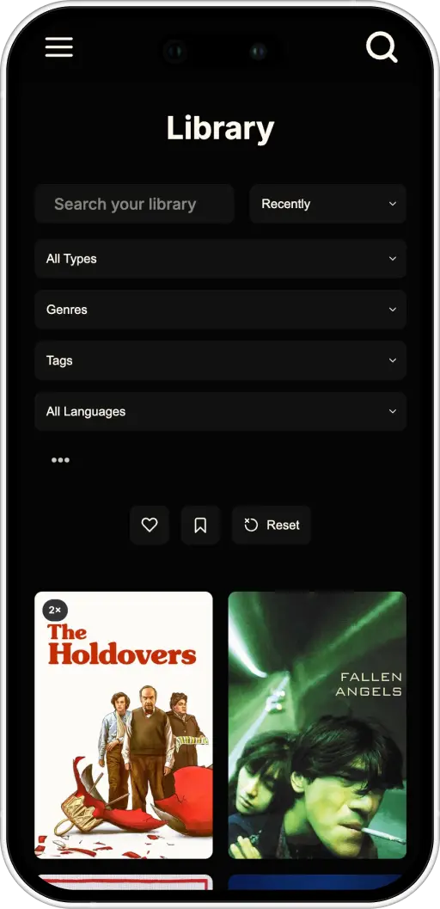
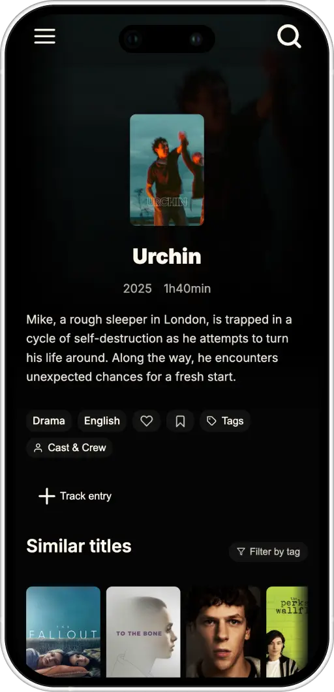
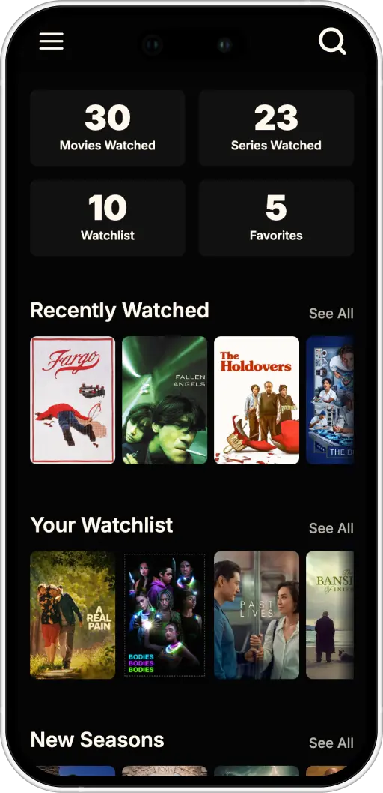

Sometime in 2020 I started tracking the films and series I watched. Not on established platforms like Letterboxd though – I had a
overview
context: personal project
timeline: 20 weeks
role: UX/UI designer, full-stack developer
techstack: Figma, JavaScript, TMDB API
Designed the tagging system first as a data model exercise before it was ever a UI — what needs to be many-to-many, what needs to be searchable, what needs to feed the recommendation logic. UI design followed once that structure held up.


A working app: a film API for metadata/posters, a custom tagging layer on top, and simple recommendation logic that surfaces titles sharing tags with what you've rated highly.
Doing the data modelling before the UI was the right call — it meant the interface didn't have to work around structural decisions made too early. The recommendation logic is intentionally simple right now; a natural next step would be weighting tags by recency.